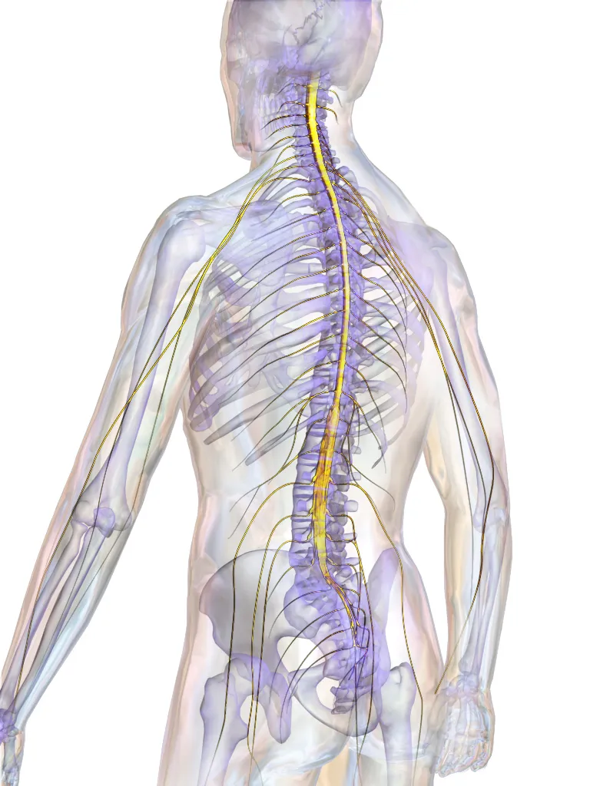
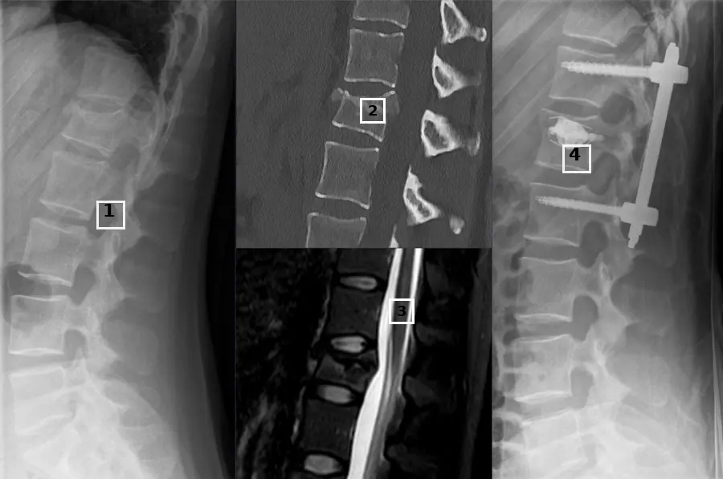

Traumatismes du rachis
Traumatismes du rachis
Cette phase fixe les dix diagnostics qui concurrencent réellement un traumatisme du rachis, car la phase suivante ne développera que ces noms.
1. Définition
EUROSPINE définit la rubrique fracture ou traumatisme, dans le dictionnaire approuvé en 2020, comme une fracture ou une lésion discoligamentaire résultant d’un traumatisme.eurospine-2020
2. Épidémiologie (Suisse, puis Europe)
La Revue médicale suisse indique en 2005 les lésions thoraco-lombaires parmi les plus fréquentes des lésions rachidiennes.rms2005-freq
Le comité de la World Federation of Neurosurgical Societies retient une incidence annuelle d’environ 30 fractures thoraco-lombaires pour 100 000 habitants, ostéoporose comprise.wfns-inc
Dans une cohorte multicentrique allemande et autrichienne de 865 patients, les fractures de type A représentaient 63,3 % des cas.de-mcs
Ce type A de Magerl comprend la compression à mur continu et le burst, donc 63,3 % ne mesure pas la seule compression.de-mcs
Les lésions en distraction de type B comptaient 181 patients, soit 20,9 %, et les lésions rotatoires de type C 136 patients, soit 15,7 %.de-mcs
La jonction de T11 (onzième vertèbre thoracique) à L2 (deuxième vertèbre lombaire) regroupait 68,8 % de ces fractures, ce qui confirme le poids de l’étage thoraco-lombaire.de-mcs
Le registre européen TARN (Trauma Audit and Research Network) a suivi 250 584 adultes traumatisés majeurs entre 1988 et 2009.tarn-reg
Parmi eux, 24 000 patients, soit 9,6 %, avaient une fracture ou une luxation rachidienne sans lésion médullaire clinique.tarn-reg
Une lésion médullaire, avec ou sans fracture, concernait 4 489 patients, soit 1,8 % de cette cohorte.tarn-reg
Parmi les fractures sans atteinte médullaire, le rachis lombaire représentait 37,09 %, le thoracique 28,06 % et le cervical 24,50 %.tarn-reg
En Suisse, SwiSCI indique l’incidence brute du traumatisme médullaire à 18,0 pour un million d’habitants et par an.swisci-ir
L’intervalle de confiance à 95 % de l’incidence suisse va de 16,9 à 19,2.swisci-ir
Le taux standardisé sur la population mondiale de l’Organisation mondiale de la Santé (OMS) atteint 21,7.swisci-ir
Ce taux suisse se situe entre environ 8,3 pour un million au Danemark et 33,6 pour un million en Grèce.swisci-ir
De 2005 à 2012, les quatre centres suisses ont recensé 932 cas, dont 693 hommes et 239 femmes.swisci-ir
L’incidence annuelle atteint 27,5 pour un million chez les hommes et 9,0 pour un million chez les femmes.swisci-ir
Le rapport d’incidence hommes sur femmes vaut 3,1, et il culmine à 3,9 entre 16 et 30 ans.swisci-ir
L’âge moyen à la lésion est de 48,0 ans, avec un écart-type de 19,7 ans.swisci-desc
La paraplégie concerne 56,2 % des cas, soit 524 personnes, et elle dépasse la tétraplégie.swisci-desc
Les lésions incomplètes représentent 68,1 % des cas suisses, et les lésions complètes en représentent 28,3 %.swisci-desc
Les chutes causent 37,1 % des traumatismes médullaires, soit 346 cas dans cette cohorte.swisci-desc
À 76 ans ou plus, plus de 80 % des chutes en cause sont des chutes de faible hauteur.swisci-ir swisci-desc
Entre 1990 et 2011, 2 492 personnes ont présenté un traumatisme médullaire et 379 sont mortes.swisci-smr
Le rapport standardisé de mortalité atteint 2,32 par rapport à la population suisse, avec un intervalle de 2,10 à 2,56.swisci-smr
Les fractures de l’odontoïde sont plus fréquentes que les fractures de C1 (atlas), et le type II est le type d’odontoïde le plus fréquent.rms2005-c1 rms2005-od
La Revue médicale suisse de 2021 qualifie l’incidence des lésions cervicales après traumatisme fermé de relativement faible.rms2021-inc
| Chiffre | Population | Année | Source |
|---|---|---|---|
| 18,0 pour un million et par an | Suisse, traumatisme médullaire admis en réadaptation | 2005 à 2012 | SwiSCI, Chamberlain |
| 30 pour 100 000 et par an | Fractures thoraco-lombaires, ostéoporose comprise | revues 2010 à 2020 | Comité spinal WFNS (World Federation of Neurosurgical Societies) |
| 2,32 | Rapport de mortalité standardisé, Suisse | 1990 à 2011 | SwiSCI |
3. Physiopathologie
La colonne normale transmet le poids par le corps vertébral et guide le mouvement par les articulaires postérieures et les disques.
Le canal osseux protège la moelle, donc un fragment qui recule rétrécit l’espace nerveux avant même qu’un déficit soit complet.
Une compression simple écrase le mur antérieur, et le mur postérieur reste continu.rms2005-tl
Ce tableau ne constitue pas tout le type A, dont la cohorte ne publie qu’un pourcentage global.de-mcs
Le burst ajoute la rupture du mur postérieur, ce qui explique le risque de fragment intracanalaire et de déficit.rms2005-tl
La flexion-distraction ouvre les éléments postérieurs, puisque le type B rompt la bande de tension qui retient la vertèbre.rms2005-tl
La rotation ajoute un déplacement transversal, et le type C devient alors le plus instable des trois familles.rms2005-tl
Au cou, l’artère vertébrale longe les foramens transversaires, donc une fracture qui touche ce foramen peut léser le vaisseau.rms2002-av
Le nerf phrénique, issu des racines C3 (troisième racine cervicale) à C5 (cinquième racine cervicale), innerve le diaphragme, donc une lésion à ce niveau ou au-dessus peut supprimer la ventilation.rms2014
La queue de cheval est faite de racines, ce qui explique une atteinte souvent incomplète et douloureuse plutôt qu’un niveau médullaire net.
Le schéma suivant montre où le déficit change de territoire, afin de relier le niveau osseux au niveau nerveux.


Le repère cervical siège sur la moelle haute, donc une lésion à ce niveau menace la ventilation et les quatre membres.
Le repère thoracique siège plus bas, donc le déficit épargne les mains lorsque le niveau reste sous le renflement cervical.
Le repère thoraco-lombaire siège là où les fractures sont les plus nombreuses dans la cohorte germanophone.de-mcs
Bruce Blausen a dessiné cette vue postérieure en couleur, et la licence Creative Commons Attribution autorise la copie annotée.image-blausen
Le fichier d’origine porte le nom Blausen 0822 SpinalCord sur Wikimedia Commons, consulté en novembre 2026.image-blausen
| Perturbation | Exploration | Thérapeutique liée au mécanisme |
|---|---|---|
| Mur antérieur seul, cyphose limitée | Tomodensitométrie qui montre un mur postérieur continu | Contention externe si les seuils de la revue de 2005 sont respectés |
| Mur postérieur rompu | Coupe axiale qui mesure le rétrécissement du canal | Stabilisation lorsque le canal, la cyphose ou le déficit l’imposent |
| Bande postérieure ouverte | Recherche d’un écart interépineux et d’une lésion abdominale associée | Fixation, car la distraction ne tient pas par un corset seul |
| Déplacement rotatoire | Tomodensitométrie du déplacement transversal | Réduction et ostéosynthèse, car la fracture-luxation thoraco-lombaire est une indication absolue dans la revue de 2005 |
| Ischémie vertébrale | Angio-imagerie par résonance magnétique si le foramen est touché | Discussion vasculaire, sans dose inventée dans cette phase |
4. Démarche diagnostique
On exclut d’abord la lésion médullaire, marquée E1, car l’atteinte cervicale haute peut supprimer la ventilation.rms2014
On cherche ensuite la dissociation occipito-cervicale, marquée E2, car la revue de 2005 la dit plutôt rare et souvent chirurgicale.rms2005-c1
La fracture-luxation thoraco-lombaire, marquée E3, vient après, puisque la revue en fait une indication chirurgicale absolue.rms2005-ind
Les distractions de type B, dont la flexion-distraction, comptent 20,9 %, et les rotations de type C, dont la fracture-luxation, comptent 15,7 %.de-mcs
La flexion-distraction reçoit un drapeau et le rang E4, car la revue la classe parmi les lésions instables.rms2005-ind
La compression à mur continu et le burst partagent le type A, soit 63,3 %, et leur ordre interne n’est pas numéroté.de-mcs
Les numéros DX.1 et DX.2 nomment ces deux fractures, et ils ne disent pas que l’une est plus fréquente que l’autre.
L’odontoïde de type II est plus fréquente que l’atlas selon la revue de 2005, sans taux suisse qui la classe devant le type A.rms2005-od
La luxation facettaire cervicale reste dans les dix et reçoit un drapeau.rms2005-cx
La revue de 2005 indique de la réduire, au même titre que le burst et le tear-drop.rms2005-cx
Le burst cervical, le tear-drop et la luxation facettaire restent sans taux lu, et aucun ordre ne les classe entre eux.rms2005-cx
L’isthme de C2 (axis) ne reste pas dans les dix, et il est opéré si les clichés dynamiques montrent une instabilité.rms2005-cx
Le piège de la compression est de croire stable une cyphose qui dépasse 20 degrés ou une perte de hauteur qui dépasse 50 %.rms2005-tl
Si ce seuil est franchi, la revue indique une stabilisation plutôt qu’un corset isolé.rms2005-ind
Le piège du burst est de négliger un canal rétréci de plus de 66 %, car la revue demande alors un abord antérieur.rms2005-tl
Le piège de l’odontoïde est le déplacement de plus de 5 mm après 50 ans, qui oriente vers une fixation.rms2005-od
| Diagnostic | Signe clé | Examen qui tranche | Mécanisme | Conduite immédiate | Rang E |
|---|---|---|---|---|---|
| DX.1 Fracture thoraco-lombaire par compression | Le malade a une douleur locale, et le mur postérieur reste continu. | La tomodensitométrie montre que le mur postérieur reste continu. | La compression écrase le corps. | La contention suffit si les seuils de 2005 tiennent. | Sans rang E, ex æquo avec DX.2 |
| DX.2 Fracture burst thoraco-lombaire | Le mur postérieur est rompu. | La coupe axiale mesure le rétrécissement du canal. | L’éclatement recule le fragment du corps vers le canal. | On stabilise si le déficit progresse ou si les seuils sont dépassés. | Sans rang E, ex æquo avec DX.1 |
| DX.3 Fracture thoraco-lombaire par flexion-distraction | L’écart postérieur se palpe et se voit sur la coupe. | La tomodensitométrie cherche aussi une lésion abdominale. | La distraction ouvre la bande de tension. | On fixe cette flexion-distraction, car la lésion est instable et le traitement suit cette instabilité. | E4 |
| DX.4 Fracture-luxation thoraco-lombaire | Le déplacement reste transversal. | La tomodensitométrie montre le déplacement. | La rotation emporte le segment, et le déplacement qui en résulte reste transversal. | La réduction et l’ostéosynthèse restent indiquées. | E3 |
| DX.5 Fracture de l’odontoïde de type II | La douleur haute suit une chute sur le crâne. | Les coupes de C2 (axis) montrent la base. | La fracture reste à la base de l’odontoïde. | On discute la fixation si le déplacement dépasse 5 mm après 50 ans. | Sans rang E |
| DX.6 Fracture burst cervicale | Le mur postérieur cervical est rompu. | La tomodensitométrie du cou montre le mur. | Au cou, l’éclatement recule le fragment du corps vers le canal. | La fixation suit les burst instables de la revue. | même bande E, sans ordre |
| DX.7 Fracture tear-drop cervicale | Le fragment antérieur a la forme d’une larme. | La tomodensitométrie montre le fragment. | La flexion comprime le corps, et le fragment antérieur prend alors la forme d’une larme. | La fixation traite cette lésion instable. | même bande E, sans ordre |
| DX.8 Luxation facettaire cervicale | Le patient garde une attitude vicieuse du cou. | La tomodensitométrie montre la facette. | La flexion distrait l’articulaire, et cette distraction produit la luxation de la facette. | On réduit avec prudence, comme le demande la revue. | même bande E, sans ordre |
| DX.9 Lésion médullaire traumatique | Le niveau sensitif et le déficit moteur sont présents. | L’examen neurologique est répété, et il porte sur le niveau sensitif comme sur le déficit moteur. | La compression, la contusion ou l’ischémie reste le mécanisme. | On tient la voie aérienne et l’axe avant l’imagerie. | E1 |
| DX.10 Dissociation occipito-cervicale | L’écart crânio-cervical reste le signe. | La tomodensitométrie de la charnière montre l’écart. | La distraction occipitale reste le mécanisme. | La fixation reste souvent chirurgicale. | E2 |
5. Anamnèse ciblée et drapeaux rouges
L’anamnèse commence par le mécanisme, car le vecteur d’énergie prédit la famille de fracture avant même la coupe.
Une chute de sa hauteur chez une personne âgée oriente vers l’odontoïde, puisque la revue de 2005 la suspecte après une réception sur le crâne.rms2005-c1
Une chute de plus de deux mètres augmente le risque de fracture ou de luxation par un rapport de cotes de 4,17.tarn-reg
On date l’heure du traumatisme pour suivre l’évolution du déficit au cours du temps.
On demande si le déficit était complet d’emblée, car environ 3 % seulement des lésions complètes récupèrent pendant les 24 premières heures.rms2005-init
Une aggravation secondaire n’a pas le même sens qu’un déficit fixé, donc elle impose de chercher une compression encore réversible.rms2005-ind
La douleur médiane, l’irradiation dans un dermatome et la rétention d’urines se demandent séparément, afin de ne pas mélanger rachis, racine et queue de cheval.
On relève les anticoagulants et les antiagrégants, puisque une chirurgie du jour en dépend, sans inventer ici un délai d’arrêt.
Un traumatisme crânien associé rend le cou suspect, car la revue de 2005 lie les deux atteintes.rms2005-init
La céphalée postérieure, le vertige ou un trouble visuel après un traumatisme cervical font chercher l’artère vertébrale, lorsque le foramen est concerné.rms2002-av
Chez l’enfant et chez la personne intoxiquée, l’anamnèse est peu fiable, donc l’immobilisation se maintient jusqu’à un examen exploitable.hug-preh
| Drapeau rouge | Signification | Action immédiate |
|---|---|---|
| Déficit moteur qui s’étend | Compression neurologique encore évolutive | Immobiliser et appeler le chirurgien, indication absolue de la revue de 2005 |
| Fréquence respiratoire inférieure à 10 ou supérieure à 30 | Menace vitale selon le protocole genevois | Traiter la respiration avant de perfectionner l’immobilisation |
| Pouls supérieur à 120 ou pouls radial absent | Choc possible, y compris vasoplégie haute | Remplissage et recherche d’une autre hémorragie, sans retarder le transport |
| Douleur cervicale haute après chute banale du sujet âgé | Odontoïde jusqu’à preuve du contraire | Coupes de C2, pas un simple cliché rassurant |
| Traumatisme pénétrant isolé sans déficit | Le protocole genevois ne retient pas l’immobilisation systématique | Ne pas immobiliser, sauf déficit neurologique avéré |
Les seuils préhospitaliers s’ouvrent dans la fenêtre des menaces vitales, car ils précèdent l’immobilisation.hug-vit
Le protocole des Hôpitaux universitaires de Genève (HUG), mis à jour en 2023, décrit cinq situations de menace vitale immédiate.hug-vit
La première est la compromission des voies aériennes, car aucune contention ne précède l’oxygène.hug-vit
La deuxième est une fréquence respiratoire inférieure à 10 ou supérieure à 30 cycles par minute.hug-vit
La troisième est un pouls supérieur à 120, et la quatrième est l’absence de pouls radial.hug-vit
La cinquième est l’absence de réponse motrice aux ordres, qui empêche de se fier au patient.hug-vit
Dans ces cas, la stabilisation est minimale et le transport est rapide vers un hôpital capable de traiter le blessé sévère.hug-preh
Lors de l’intubation, le maintien manuel de la tête est systématique, cependant l’oxygénation prime sur la position.hug-vit
Fermer6. Examen physique ciblé, région par région
On examine d’abord ce qui tue, puis le cou, puis le dos, car un log-roll complet déplace les fractures et n’apporte qu’un examen grossier.hug-log
Le patient conscient et calme protège mieux son cou par son tonus que par une minerve posée avant l’imagerie, selon la revue neuchâteloise de 2021.rms2021-min
La palpation du dos cherche une marche, une plaie ou un hématome, et un log-roll de 20 à 30 degrés suffit.hug-log
Le normal est une ligne médiane indolore, une mobilité active prudente et un examen moteur symétrique, lorsque aucun critère de gravité n’est présent.
Le pathologique est une douleur provoquée, un écart interépineux ou un niveau sensitif, et chacun de ces signes change la conduite.
Au cou, on regarde la position de la tête avant de palper, afin de ne pas réduire une luxation facettaire par un geste brusque.rms2005-cx
La technique consiste à maintenir l’axe, à palper les épineuses une à une, puis à tester la force seulement si le patient obéit.hug-vit
Un déficit des deltoïdes oriente vers le renflement cervical, tandis qu’un déficit des fléchisseurs de hanche oriente plus bas.
Le tonus anal et la sensibilité périnéale se testent lorsque le niveau peut atteindre le cône, car leur absence change le pronostic sphinctérien.
Le piège est de déclarer l’examen normal chez un patient distrait par une autre fracture, puisque la douleur à distance masque le rachis.
La valeur du toucher médian est modeste pour exclure une fracture, donc il ne remplace pas la tomodensitométrie quand le mécanisme est fort.hug-log
La fenêtre du log-roll partiel décrit le geste, et la fenêtre de la minerve dit quand elle nuit.
Le retournement complet, du dos au flanc, est inutile et doit en principe être évité.hug-log
Il provoque des mouvements et des douleurs lorsque le rachis, le bassin ou un os long est fracturé.hug-log
Un angle de 20 à 30 degrés permet déjà de voir le dos et de palper les épineuses.hug-log
Les transferts se font avec une civière à aube, et la planche rigide ne sert que brièvement.hug-log
Pour le rachis dorsal et lombaire, aucun score validé ne choisit qui immobiliser, donc le matelas coquille reste la règle en cas de suspicion.hug-log
FermerAucune étude randomisée lue dans la revue de 2021 n’a montré que la minerve diminue la mortalité ou les complications neurologiques.rms2021-min
Le mouvement résiduel sous minerve reste d’environ 30 à 50 degrés chez les sujets étudiés.rms2021-min
Le maintien manuel en ligne limite le mouvement à 10 à 15 degrés, ce qui rejoint les blocs de tête.rms2021-min
Les blocs seuls laissent 5 à 10 degrés chez le volontaire sain et 4 à 20 degrés sur des cadavres lésés.rms2021-min
Depuis 2020, Neuchâtel a abandonné la minerve rigide avant l’imagerie, en préhospitalier comme aux urgences.rms2021-min
Le protocole genevois garde la minerve rigide chez le patient intubé, afin de tenir l’axe tête-cou-tronc.hug-vit
Chez le patient agité non intubé, la minerve peut augmenter les mouvements, donc un autre moyen est préféré.hug-log
Elle peut limiter la respiration, favoriser une inhalation, ulcérer l’occiput et aggraver une spondylarthrite ankylosante.hug-log
Fermer7. Approche syndromique
Sept syndromes organisent le tri, et chacun relie un signe fonctionnel à un signe physique et à un mécanisme.
Le premier syndrome est la douleur rachidienne isolée, lorsque la force et la sensibilité restent normales.
Son geste est la palpation étage par étage, et son mécanisme est l’étirement ou la fracture stable tant que le mur postérieur tient.rms2005-tl
Le deuxième syndrome est le déficit radiculaire, avec une douleur dans un dermatome et une faiblesse d’un seul myotome.
On le distingue d’un niveau médullaire parce que le territoire s’arrête à une racine et que le côté opposé peut être épargné.
Le troisième syndrome est le niveau médullaire, défini par un déficit sous une frontière et souvent un trouble sphincter.
SwiSCI classe ce niveau de A à E sur l’échelle de l’American Spinal Injury Association (ASIA), de la lésion complète au bilan normal.swisci-desc
Le quatrième syndrome est la tétraplégie, et il impose de vérifier la toux et la voix avant de discuter le geste osseux.swisci-desc
Le cinquième syndrome est la paraplégie, plus fréquente dans la cohorte suisse, avec 56,2 % des cas.swisci-desc
Le sixième syndrome est l’instabilité douloureuse sans déficit, comme la luxation facettaire encore réductible.rms2005-cx
Le septième syndrome est le syndrome vertébro-basilaire traumatique, lorsque le déplacement touche le foramen de l’artère.rms2002-av
| Syndrome | Signes fonctionnels | Signes physiques |
|---|---|---|
| 7.1 Douleur isolée | Douleur locale augmentée par le mouvement | Palpation douloureuse, force conservée |
| 7.2 Racine | Irradiation dans un dermatome | Faiblesse d’un myotome, réflexe diminué |
| 7.3 Niveau médullaire | Engourdissement sous une frontière | Parésie, niveau sensitif, trouble sphincter |
| 7.4 Tétraplégie | Faiblesse des quatre membres et toux faible | Niveau cervical, respiration à surveiller |
| 7.5 Paraplégie | Faiblesse des jambes, bras utiles | Niveau thoracique ou plus bas |
| 7.6 Instabilité | Blocage et douleur vive au moindre mouvement | Attitude vicieuse, marche articulaire |
| 7.7 Artère vertébrale | Vertige, trouble visuel, céphalée postérieure | Foramen traversé à l’imagerie |
La fenêtre échelle de déficience rappelle que la lettre décrit la gravité et non une autre maladie.
L’échelle ASIA (American Spinal Injury Association) sert à décrire la lésion, elle ne crée pas dix maladies différentes.swisci-desc
Environ 40 % des cas suisses sortent avec une lettre D, et 30 % ont une lésion sévère incomplète ou complète sous le renflement cervical.swisci-desc
Les lésions sévères de niveau neurologique C1 à C8 (huitième niveau cervical), grades A, B ou C, représentent 17 % des cas.swisci-desc
Les niveaux C1 à C4 (quatrième niveau cervical), aux mêmes grades, en représentent 9,2 %, soit 86 cas.swisci-desc
Les niveaux C5 (cinquième niveau cervical) à C8, grades A, B ou C, en représentent 7,6 %, soit 71 cas.swisci-desc
Les formes incomplètes sont 68,1 % et les formes complètes 28,3 %, donc la lettre complète n’est pas le tableau le plus fréquent.swisci-desc
Traiter la forme complète et la forme incomplète comme deux diagnostics concurrents serait une erreur de classement, car ce sont deux degrés d’une même lésion.
Fermer8. Diagnostic positif et critères
La lésion peut traverser le disque ou le ligament, et le statut neurologique peut rester intact.aos-2017
Le diagnostic positif d’une fracture repose sur la tomodensitométrie, car la revue lausannoise de 2005 s’appuie sur le scanner du corps entier chez le polytraumatisé.rms2005-init
Une douleur sans trait et sans écart ligamentaire ne suffit pas à poser une fracture, donc l’entorse reste un diagnostic d’exclusion osseuse.
La compression est retenue lorsque le mur antérieur cède et que le mur postérieur reste continu, avec moins de 20 degrés de cyphose.rms2005-tl
Elle sort du traitement conservateur décrit si la perte de hauteur du mur antérieur dépasse 50 %.rms2005-tl
Le burst est positif lorsque le mur postérieur est rompu, et le rétrécissement du canal se mesure sur la coupe.rms2005-tl
Jusqu’à 33 % de rétrécissement, la revue décrit une chirurgie postérieure avec réduction indirecte.rms2005-tl
Au-delà de 66 % de rétrécissement, la revue décrit un abord antérieur afin de décomprimer le canal.rms2005-tl
L’odontoïde de type II est la fracture à la jonction du processus et du corps de C2, selon Anderson et d’Alonzo, cités en 2005.rms2005-od
Le déplacement de plus de 5 mm, surtout après 50 ans, est le seuil à partir duquel la revue indique la chirurgie.rms2005-od
La fracture de Jefferson et le ligament transverse font exception parmi les fractures de C1, dont la plupart restent stables.rms2005-c1
L’écart des masses latérales au-delà de 7 mm fait suspecter ce ligament dans une fracture de Jefferson, sans créer un onzième diagnostic.rms2005-c1
L’isthme de C2 n’est opéré que si les clichés dynamiques montrent une instabilité.rms2005-cx
La classification de l’Arbeitsgemeinschaft für Osteosynthesefragen (AO), citée par la revue en 2005, distingue trois familles morphologiques.rms2005-tl
Le type A reste une compression, le type B une distraction, et le type C une lésion avec rotation.rms2005-tl
Le score TLICS (Thoracolumbar Injury Classification and Severity Score) de 2005 ajoute des points, et il ne remplace pas les seuils suisses de la revue.tlics-2005
La morphologie compte 1 point pour une compression, 2 pour un burst, 3 pour une translation et 4 pour une distraction.tlics-2005
Le complexe ligamentaire postérieur compte 0 point s’il est intact, 2 s’il est suspect, et 3 s’il est rompu.tlics-2005
Un total d’au plus 3 points oriente vers le traitement orthopédique, et un total d’au moins 5 points oriente vers la chirurgie.tlics-2005
Le total de 4 points laisse le choix ouvert, et la conduite retenue reste celle de la revue suisse de 2005.tlics-2005 rms2005-tl
La Haute Autorité de santé, en novembre 2020, écrit les cinq critères dont la présence commune permet d’éviter l’imagerie selon NEXUS (National Emergency X-Radiography Utilization Study).has-2020
La lésion médullaire est positive selon SwiSCI dès qu’un déficit sensitif ou moteur suit une lésion aiguë du canal.swisci-def
Un examen normal ne suffit pas à l’exclure chez le patient non évaluable, et l’imagerie reste nécessaire.rms2002-av
La règle NEXUS (National Emergency X-Radiography Utilization Study), décrite en 2021, a une sensibilité proche de 99 % pour une lésion cervicale significative.rms2021-inc
L’étude princeps a inclus 34 069 patients, de 1 à 101 ans, dans 21 centres de traumatologie.rms2021-nexus
Le score permet d’éviter une imagerie chez 12,6 % de ces patients, et la règle canadienne en aurait évité 40 %.rms2021-nexus
La règle canadienne n’est pas validée avant 18 ans ni après 65 ans, et cette limite n’est pas celle de NEXUS.rms2021-nexus
La Haute Autorité de santé décrit par ailleurs l’âge d’au moins 65 ans comme un critère de risque élevé de la règle canadienne.has-2020
Il n’y a pas de sensibilité de la ligne médiane postérieure, pas de déficit focal, et la conscience est normale avec un score de Glasgow à 15.has-2020
Il n’y a pas de signe d’intoxication, et il n’y a pas de douleur distrayante telle qu’une fracture d’un os long.has-2020
Ces cinq absences, ensemble, définissent le bas risque NEXUS selon la fiche de la Haute Autorité de santé de 2020.has-2020
La règle NEXUS ne s’applique pas au traumatisme pénétrant ni au patient instable, selon la même fiche.has-2020
La règle canadienne, dans cette fiche, concerne un adulte d’au moins 16 ans, conscient, avec un score de Glasgow à 15.has-2020
La règle est appliquée dès 16 ans par la fiche de la Haute Autorité de santé de 2020.has-2020
Elle fait de l’âge d’au moins 65 ans un critère de risque élevé.has-2020
Alors que la revue neuchâteloise de 2021 dit la règle non validée avant 18 ans et après 65 ans.rms2021-nexus
Elle exige aussi des signes vitaux stables, et un traumatisme de la tête ou du cou datant de moins de 48 heures.has-2020
Un âge d’au moins 65 ans, des paresthésies des extrémités, ou une chute d’au moins 1 mètre indiquent l’imagerie.has-2020
Une chute d’au moins 5 marches, un choc axial, un accident au-delà de 100 km/h, des tonneaux, une éjection, un quad ou une collision à vélo indiquent l’imagerie.has-2020
Sans critère élevé, la rotation active de la tête à 45 degrés de chaque côté peut éviter le cliché.has-2020
Une collision arrière simple, sans camion, sans bus et sans tonneau, reste un critère de bas risque canadien.has-2020
Une position assise bien tolérée aux urgences permet d’évaluer la rotation, de même que la marche depuis le choc.has-2020
Une douleur cervicale d’apparition retardée reste un critère de bas risque, ainsi que l’absence de douleur sur les épineuses.has-2020
La fiche exclut la femme enceinte, le retour pour la même lésion, et une paralysie aiguë déjà installée.has-2020
La règle canadienne ne reste pas applicable lorsqu’une pathologie cervicale est déjà connue.has-2020
Un score de Glasgow inférieur à 15 reste hors de cette règle, de même que des signes vitaux anormaux.has-2020
Le repère 2 reste sur le scanner, au bord postérieur du corps cunéiforme, du côté du canal.image-burst
Les critères de bas risque se lisent avec un ou, donc un seul d’entre eux permet déjà de tester la rotation.has-2020
Si le patient ne peut pas tourner activement la tête à 45 degrés de chaque côté, l’imagerie reste indiquée, même en l’absence des critères de risque élevé.has-2020
Le repère 3 reste sur l’imagerie par résonance magnétique (IRM), dans le sac dural clair, à l’étage fracturé de ce panneau.image-burst
La fiche indique une pression systolique d’au moins 90 mmHg et une fréquence respiratoire de 10 à 24 cycles.has-2020
Une enquête allemande de 131 chirurgiens recommande l’abord dorsal dans 41 % des réponses sur les burst incomplets.de-a3
L’abord dorsoventral y représente 33 % des réponses, et le traitement conservateur 26 %.de-a3
Le seuil d’angle de plateau associé à la chirurgie, dans cette enquête, est supérieur à 12 degrés.de-a3
Ce seuil de 12 degrés ne remplace pas la cyphose de 20 degrés écrite par la revue suisse de 2005.de-a3 rms2005-tl
Le score TLICS compte 2 points pour une racine ou une lésion complète, et 3 points pour une lésion incomplète.tlics-2005
La queue de cheval compte aussi 3 points, tandis qu’un examen neurologique normal compte 0 point.tlics-2005
| Critère | Seuil lu | Ce qui ne suffit pas |
|---|---|---|
| Compression conservatrice | Moins de 20 degrés et moins de 50 % de perte de hauteur | Une simple douleur sans mesure de la cyphose |
| Chirurgie du burst | Cyphose au-delà de 20 degrés, canal au-delà de 50 %, ou perte de hauteur au-delà de 50 % | Confondre ce seuil avec le déficit progressif, qui est une indication absolue distincte |
| Abord antérieur | Rétrécissement au-delà de 66 % | Une voie postérieure seule dans cette situation |
| Odontoïde opératoire | Plus de 5 mm après 50 ans | L’âge seul, sans mesurer le déplacement |
| Ligament transverse | Écart des masses latérales au-delà de 7 mm | Une fracture de C1 sans cette mesure |
9. Examens complémentaires
Le standard de référence d’une fracture du polytraumatisé est la tomodensitométrie (TDM), parce que le scanner du tronc montre aussi le rachis.rms2005-init
L’imagerie par résonance magnétique (IRM) reste l’examen complémentaire des lésions neurologiques et ligamentaires, et elle ne remplace pas l’os.rms2005-init
En première intention, chez le traumatisé majeur stable, on demande la TDM de la région douloureuse ou du rachis entier si le scanner du corps est déjà indiqué.rms2005-init
La lecture du scanner utilise les coupes axiales et les reformatages sagittaux et coronaux.rms2002-av
Un scanner cervical multidétecteur, dans l’article de 2002, permet d’obtenir les images en 30 à 45 secondes avec des coupes de 1,3 mm.rms2002-av
L’alternative chez la personne enceinte est de limiter le champ et de privilégier l’IRM dès que le déficit impose de voir le ligament, sans dose de contraste inventée.
Chez l’enfant, on évite d’irradier un rachis indolore et examinable, cependant un mécanisme fort maintient l’indication de la TDM.
Si le débit de filtration glomérulaire est bas ou si l’iode est refusé, l’angio-TDM est remplacée par l’angio-IRM lorsque le foramen vertébral est touché.rms2002-av
Si l’IRM est impossible, le diagnostic osseux repose sur la TDM, et le ligament instable se discute sur des clichés dynamiques seulement après un avis spécialisé.rms2005-cx
Le rôle de l’IRM avant la réduction est discuté, car une hernie après réduction est présente chez près de la moitié des sujets, avec un faible risque de détérioration neurologique.rms2005-cx
La revue ne donne pas un pourcentage de détérioration neurologique après réduction, elle parle seulement d’un faible risque.rms2005-cx
Une angio-IRM devrait être réalisée si la lésion est très déplacée ou si elle touche le foramen de l’artère vertébrale.rms2002-av
La règle de sélection cervicale est détaillée dans la fenêtre NEXUS et règle canadienne.
| Résultat | Signification | Conduite |
|---|---|---|
| Mur postérieur continu et cyphose sous 20 degrés | Compression pouvant rester orthopédique | Corset, selon la revue de 2005 |
| Rétrécissement du canal | Jusqu’à 33 %, voie postérieure ; au-delà de 66 %, abord antérieur | La voie postérieure est décrite jusqu’à 33 % de rétrécissement, et l’abord antérieur au-delà de 66 %, sans étendre la voie postérieure à la bande intermédiaire. |
| Canal rétréci au-delà de 66 % | Décompression antérieure plus efficace selon la revue | Abord antérieur |
| Écart des masses de C1 au-delà de 7 mm | Ligament transverse suspect | Ne pas traiter comme une fracture stable de C1 |
| Foramen transversaire franchi | Artère vertébrale à risque | Angio-IRM |
Le schéma de couleur du point 3 montre le niveau, et il ne montre pas le conflit entre un fragment osseux et le sac dural.
Le scanner ouvert dans la fenêtre burst lombaire montre le mur qui recule, et l’IRM montre le sac sur un autre panneau.image-burst
Hellerhoff a publié en 2022 cette planche d’un burst de L1 (première vertèbre lombaire), sous licence Creative Commons Attribution-Share Alike 4.0.image-burst


Le repère 1 reste sur la radiographie de profil, dans le canal derrière un disque, avant la fixation.image-burst
Le repère 2 reste sur le scanner, au mur postérieur du corps cunéiforme qui recule vers le canal.image-burst
Le repère 3 reste sur l’IRM, dans le sac dural clair, à la hauteur de la vertèbre fracturée de ce cliché.image-burst
Le repère 4 siège sur le contrôle après vissage, sous le ciment du corps, et ce cliché ne sert pas au diagnostic initial.image-burst
Cette planche ne donne pas un pourcentage de canal, donc les seuils de 33 % et de 66 % restent ceux de la revue de 2005.rms2005-tl
Elle sépare une compression à mur continu d’un burst dont le mur postérieur recule, ce que le schéma anatomique ne peut pas faire.
Fermer10. Arbre décisionnel
Chaque branche nomme un signe, un examen ou un geste, et les rangs E passent avant les diagnostics fréquents.
- Si la voie aérienne, la respiration ou le pouls sont menacés, alors traiter cette menace avant de compléter l’immobilisation.hug-vit
- Si un niveau médullaire menace la ventilation, ou si le déficit s’aggrave, alors classer E1 et tenir la voie aérienne avant l’image.rms2005-init
- Si le déficit reste une seule racine, sans niveau médullaire ni aggravation, alors il ne reçoit pas le rang E1.swisci-def
- Si le déficit s’aggrave, alors la décompression devient une indication absolue dans la revue de 2005.rms2005-ind
- Si la charnière occipitale est dissociée, alors classer E2 et prévoir une fixation, car le traitement est souvent chirurgical.rms2005-c1
- Si la tomodensitométrie montre un déplacement rotatoire thoraco-lombaire, alors classer E3 et préparer la réduction chirurgicale.rms2005-ind
- Si l’écart postérieur signe une flexion-distraction, alors classer E4 et fixer, car cette lésion est instable.rms2005-ind
- Si la facette cervicale est luxée, alors la classer dans la même bande E, sans ordre, et la réduire avec prudence.rms2005-cx
- Si le fragment cervical a la forme d’une larme, ou si le mur postérieur cervical est rompu, alors fixer, car la revue tient ces lésions pour instables.rms2005-cx
- Si le foramen de l’artère vertébrale est touché, alors demander une angio-IRM.rms2002-av
- Si le rétrécissement du canal reste d’au plus 33 %, la voie postérieure est celle de la revue ; au-delà de 66 %, l’abord est antérieur.rms2005-tl
- Si seuls le mur antérieur et une cyphose inférieure à 20 degrés sont en cause, alors discuter le corset.rms2005-tl
- Si l’odontoïde de type II est déplacée de plus de 5 mm après 50 ans, alors discuter la fixation.rms2005-od
- Si l’écart des masses de C1 dépasse 7 mm, alors chercher la lésion du ligament transverse.rms2005-c1
- Si le point 8 permet d’écarter l’imagerie cervicale, alors ne pas la demander.has-2020
11. Prise en charge selon les recommandations suisses
11.A But
Le but immédiat est d’éviter une aggravation neurologique, car seulement environ 3 % des lésions complètes récupèrent dans les 24 premières heures.rms2005-init
Le but à distance est de réduire la surmortalité, puisque le rapport suisse vaut 2,32 par rapport à la population générale.swisci-smr
11.B Moyens
La conduite des premières minutes est dans la fenêtre Urgence, conduite chronologique.
Dès la première minute, on ouvre la voie aérienne et on oxygène, car l’oxygénation prime sur l’alignement du cou.hug-vit
Pendant l’intubation, une main maintient la tête, et un vidéolaryngoscope est préféré afin de moins mobiliser le cou.hug-vit
Si une menace vitale est présente, l’immobilisation ne retarde pas le geste qui sauve, puis le transport vise un centre capable.hug-preh
Le patient au traumatisme fermé et à la lésion médullaire possible est immobilisé, en règle générale.hug-preh
Le traumatisme pénétrant isolé ne reste pas immobilisé, sauf lorsqu’un déficit neurologique est déjà avéré.hug-preh
Dans l’heure qui suit, le patient intubé garde une minerve rigide, alors que le patient conscient calme peut s’en passer avant l’image.hug-vit rms2021-min
Dès que le scanner est fait, la fracture instable reçoit son avis chirurgical, sans attendre un bilan de confort.rms2005-ind
FermerL’ordre des moyens place d’abord la réanimation, ensuite l’immobilisation adaptée, puis l’imagerie, et enfin la fixation lorsque l’indication est posée.rms2005-init
La chirurgie dans les 24 heures n’apporte, selon la revue de 2005, qu’un bénéfice modeste, et seulement pour les lésions incomplètes.rms2005-init
Le consensus européen de 2024 recommande d’envisager la décompression dans les 24 heures, après les détresses vitales.wses-2024
Les corticoïdes à haute dose ne reçoivent ici aucun milligramme, car l’article de 2005 n’en publie pas et penche vers les effets néfastes.rms2005-ster
Cette indication est hors information professionnelle suisse (AIPS), et aucune dose de corticoïde n’est écrite.
La douleur légère à modérée, y compris post-traumatique, relève du paracétamol dont la fiche est dans la fenêtre Paracétamol Stada.aips-58530
La douleur forte qui résiste aux non-opioïdes relève de la morphine, détaillée dans la fenêtre Morphine HCl Bichsel.aips-53571
La prophylaxie veineuse par énoxaparine suit l’information professionnelle de Clexane seulement dans les indications qui y sont écrites, fenêtre Clexane.aips-49456
Le blessé médullaire alité qui n’entre pas dans ces indications ne reçoit pas une dose transposée, et la phrase reste hors AIPS pour ce cadre précis.
Le moyen non médicamenteux est le matelas coquille, le corset lorsque la fracture le permet, et la verticalisation dès que la fixation ou la stabilité l’autorisent.hug-log
Chez la personne âgée, l’odontoïde déplacée se discute tôt, car le diagnostic tardif est fréquent après une chute banale.rms2005-od
Chez l’enfant, les doses de paracétamol suivent le poids écrit dans l’information professionnelle de cette molécule.aips-58530
Chez le nouveau-né ventilé, la morphine se perfuse à 10 µg par kg et par heure, sans dépasser 15 µg par kg et par heure.aips-53571
S’il respire seul, la fiche n’autorise cette morphine que sous surveillance intensive, à 5 à 7 µg par kg et par heure.aips-53571
L’insuffisance rénale sévère contre-indique la morphine selon son information professionnelle, et elle espace le paracétamol.aips-53571 aips-58530
Si le déficit persiste, l’orientation se fait vers l’un des quatre centres suisses de première réadaptation médullaire.swisci-ir
Paracétamol Stada, numéro 58530, est l’information professionnelle citée pour la douleur post-traumatique légère à modérée.aips-58530
La dose quotidienne maximale de 4000 mg ne doit pas être dépassée au-dessus de 40 kg, adolescents de plus de 12 ans compris.aips-58530
La prise usuelle va de 500 à 1000 mg, avec un intervalle de 4 à 8 heures, sans dépasser 4 g, soit 8 comprimés.aips-58530
De 9 à 12 ans, entre 30 et 40 kg, la prise va de 400 à 600 mg.aips-58530
Le maximum journalier est alors de 2000 mg, ce qui correspond à 2 g.aips-58530
Si la clairance est de 10 à 50 ml/min, l’intervalle passe à 6 heures et le maximum à 3000 mg par jour.aips-58530
Si la clairance est inférieure à 10 ml/min, l’intervalle passe à 8 heures et le maximum à 2000 mg par jour.aips-58530
| Grossesse | Les études épidémiologiques sur le développement neurologique des enfants exposés au paracétamol in utero ne présentent pas de résultats clairs. Le risque de lésions fonctionnelles et organiques, de malformations et de troubles de l’adaptation lorsque du paracétamol est pris pendant la grossesse à une posologie correcte est actuellement considéré comme faible. En cas de nécessité clinique, le paracétamol peut être pris pendant la grossesse. Toutefois, il convient d’utiliser la dose efficace la plus faible pendant la durée la plus courte possible et à la fréquence la plus basse possible. |
|---|---|
| Allaitement | Le paracétamol passe dans le lait maternel. Bien que l’utilisation du paracétamol soit considérée comme compatible avec l’allaitement, la prudence est de mise lors de l’utilisation du Dafalgan pendant l’allaitement. Le texte de Stada nomme ici Dafalgan, qui n’est pas la spécialité de cette fiche. |
| Contre-indication majeure | Hypersensibilité au paracétamol, troubles fonctionnels hépatiques graves, hépatite aiguë ou maladie de Gilbert. |
Morphine HCl Bichsel, numéro 53571, est indiquée pour les douleurs moyennement fortes à fortes lorsque les non-opioïdes ne suffisent pas.aips-53571
En douleur aiguë, la voie sous-cutanée est de 10 mg pour 70 kg toutes les 4 à 6 heures, avec des variations de 5 à 20 mg.aips-53571
Par voie intraveineuse, la titration est de 2,5 mg toutes les 5 minutes, injectée lentement, jusqu’au contrôle de la douleur.aips-53571
La naloxone et de quoi assister la ventilation doivent être à portée de main, car la dépression respiratoire est le risque immédiat.aips-53571
Le traumatisme crânien et l’hypertension intracrânienne contre-indiquent la morphine, donc ce blessé n’en reçoit aucune dose.aips-53571
| Grossesse | Morphine HCl Bichsel ne doit pas être administré pendant la grossesse, sauf en cas de nécessité absolue. Une dépression respiratoire est possible chez le nouveau-né. |
|---|---|
| Allaitement | La morphine passe dans le lait maternel. Il est absolument contre-indiqué d’allaiter. |
| Contre-indication majeure | Dépression respiratoire, iléus paralytique, insuffisance hépatique ou rénale sévère, traumatisme crânien et hypertension intracrânienne. |
Clexane, numéro 49456, a une prophylaxie écrite pour la chirurgie et pour certaines affections médicales aiguës, pas pour tout alitement médullaire.aips-49456
En chirurgie générale à risque modéré, la première injection de 20 mg, soit 2000 UI anti-Xa, se fait environ deux heures avant le geste.aips-49456
En chirurgie orthopédique à haut risque, la dose est de 40 mg, soit 4000 UI, avec une première injection 12 heures avant.aips-49456
La prophylaxie orthopédique prolongée ajoute 40 mg par jour pendant 3 semaines au traitement initial.aips-49456
La durée habituelle suit le risque et vaut en moyenne 7 à 10 jours, jusqu’à la marche selon la fiche.aips-49456
L’indication médicale d’alitement vise trois situations écrites dans la fiche, et non tout patient immobilisé.aips-49456
Elle comprend l’insuffisance cardiaque de stade III ou IV de la New York Heart Association (NYHA).aips-49456
Elle comprend aussi l’insuffisance respiratoire aiguë, ou une infection aiguë avec un autre facteur de risque.aips-49456
L’indication médicale comprend aussi l’affection rhumatologique aiguë associée à un autre facteur de risque.aips-49456
Hors ces cadres, la prophylaxie du blessé médullaire est hors AIPS et aucune dose n’est inventée pour combler le vide.
| Grossesse | Clexane multi doit être utilisé avec prudence pendant la grossesse, car l’alcool benzylique peut traverser le placenta. Clexane multi ne doit pas être utilisé chez le nouveau-né. Chez les prématurés, l’alcool benzylique a entraîné un syndrome de détresse respiratoire d’issue fatale. Chez 8 femmes enceintes valvulaires, deux ont thrombosé sous 1 mg/kg deux fois par jour, et la mère et le fœtus sont décédés.aips-49456 |
|---|---|
| Allaitement | Les données sur l’utilisation de l’énoxaparine pendant l’allaitement sont limitées. Par mesure de précaution, l’allaitement n’est pas recommandé. |
| Contre-indication majeure | Hémorragie active, accident vasculaire cérébral hémorragique récent, thrombocytopénie induite par l’héparine au cours des 100 derniers jours ou anticorps circulants. |
| Molécule | Dose lue dans l’AIPS | Voie | Durée | Contre-indication majeure |
|---|---|---|---|---|
| Paracétamol Stada | Dose orale adulte écrite dans la fiche | Orale | Intervalle indiqué dans la fiche | Hépatite grave, maladie de Gilbert |
| Morphine HCl Bichsel | Dose sous-cutanée ou titration intraveineuse écrite dans la fiche | Sous-cutanée ou intraveineuse | Rythme écrit dans la fiche | Traumatisme crânien, dépression respiratoire |
| Énoxaparine, Clexane | Dose chirurgicale écrite dans la fiche, selon le risque | Sous-cutanée | Durée moyenne écrite dans la fiche | Hémorragie active, thrombopénie à l’héparine |
11.C Surveillance
On répète le niveau sensitif et la force dans les premières 24 heures, car la persistance d’une lésion complète au-delà est de mauvais pronostic.rms2005-init
On surveille la fréquence respiratoire et la toux chez la tétraplégie, et on arrête la morphine si la ventilation ralentit.aips-53571
Après ostéosynthèse du sujet jeune, la revue indique l’ablation du matériel au minimum neuf mois plus tard.rms2005-tl
Le canal d’un burst peut se remodeler entre 6 et 24 mois, ce qui ne dispense pas de traiter un déficit progressif.rms2005-tl
11.D Pronostic
La persistance d’une lésion complète au-delà de 24 heures est de mauvais pronostic moteur, selon la revue de 2005.rms2005-init
Les lésions tétraplégiques s’associent à un risque accru de mortalité respiratoire, cardiovasculaire et infectieuse.swisci-smr
12. Prévention
La cohorte suisse SwiSCI, publiée en 2015, indique les chutes des personnes âgées et les accidents des hommes jeunes comme cibles.swisci-ir
Entre 16 et 30 ans, le rapport d’incidence hommes sur femmes atteint 3,9, donc les loisirs et la route pèsent davantage.swisci-ir
À 76 ans ou plus, plus de 80 % des chutes en cause sont de faible hauteur, ce qui oriente la prévention vers le domicile.swisci-desc swisci-ir
La prévention secondaire consiste à ne pas aggraver une lésion instable pendant le ramassage, grâce au maintien manuel et au matelas coquille.hug-log
La prévention tertiaire réduit les complications respiratoires, urinaires et thrombo-emboliques qui expliquent une partie de la surmortalité de 2,32.swisci-smr
Le comité spinal international rappelle que les chutes et les accidents de la route dominent les causes, et que les fractures du sujet âgé augmentent.wfns-inc
13. Points clés
Tout polytraumatisé est suspect d’une fracture instable jusqu’à preuve du contraire, et le crâne blessé rend le cou suspect.
La compression à mur continu ne se confond pas avec le burst, et le type A de la cohorte mélange encore ces deux tableaux.
Aucune dose de corticoïde n’est retenue, car la revue suisse de 2014 ne préconise plus la corticothérapie à haute dose.rms2014
Le consensus européen de 2024 recommande de ne pas donner le schéma NASCIS (National Acute Spinal Cord Injury Study).wses-2024
La morphine est contre-indiquée en cas de traumatisme crânien, et le paracétamol garde la dose la plus faible pendant la grossesse.
La luxation facettaire porte un drapeau, car la revue demande de la réduire, sans rang de létalité lu entre elle, le burst cervical et le tear-drop.
14. Pièges et questions fréquentes à l’examen fédéral suisse
Chaque question porte sur une confusion de seuil, de gravité ou de conduite, et la réponse cite la source déjà utilisée dans les points précédents.
| Question | Réponse | Raison |
|---|---|---|
| Peut-on donner une dose de méthylprednisolone parce qu’un protocole ancien la cite? | Non, cette leçon ne retient aucune dose, car la revue n’en publie pas. | La revue de 2005 ne donne pas de milligramme et penche vers les effets néfastes. |
| Une lésion complète et une lésion incomplète sont-elles deux diagnostics du lot? | Non, ce sont deux degrés d’une même lésion médullaire, et non deux maladies. | La lettre de gravité décrit l’évolution, elle ne crée pas un diagnostic distinct. |
| Quel seuil fait opérer une odontoïde de type II chez le sujet de plus de 50 ans? | La revue indique la chirurgie quand le déplacement dépasse 5 mm après 50 ans. | C’est le seuil écrit dans la revue suisse de 2005, pas l’âge seul. |
| À partir de quel écart des masses de l’atlas le ligament transverse est-il suspect? | Le ligament est suspect lorsque l’écart combiné des masses dépasse 7 mm. | Sans cette mesure, beaucoup de fractures de l’atlas restent stables selon la revue. |
| Un canal rétréci de plus de 66 % se traite-t-il par voie postérieure seule? | Non, la revue de 2005 demande alors un abord antérieur pour décomprimer. | La voie postérieure est décrite jusqu’à 33 % de rétrécissement, pas au-delà de 66 %. |
| La morphine est-elle permise après réévaluation si le patient a un traumatisme crânien? | Non, le traumatisme crânien contre-indique la morphine, et aucune dose n’est donnée. | L’information professionnelle place cette situation parmi les contre-indications, sans exception écrite. |
| Faut-il une minerve rigide à tout cervicalgique conscient avant le scanner? | Non, la minerve rigide n’est pas systématique avant le scanner chez un patient conscient et calme. | Neuchâtel l’a abandonnée en 2020 et Genève la réserve surtout au patient intubé. |
| Quelle est l’incidence suisse lue du traumatisme médullaire? | 18,0 pour un million et par an. | SwiSCI, 2005 à 2012, intervalle 16,9 à 19,2. |
La question finale de cette phase est de savoir si ces dix noms suffisent à orienter le blessé sans mélanger un symptôme, un terrain et un degré évolutif.
La réponse reste non, car la revue de 2005 nomme aussi la lésion ligamentaire pure, le ligament transverse de C1 et l’isthme instable de C2.rms2005-ind
Ces trois lésions ne sont pas des diagnostics du dix, et elles restent enseignées à côté de leurs seuils.rms2005-c1
Elle reste non pour un ordre chiffré à l’intérieur du type A, car la cohorte ne sépare pas la compression du burst.
Sources
- [swisci-def] Chamberlain JD et al., Epidemiology and contemporary risk profile of traumatic spinal cord injury in Switzerland, Injury Epidemiology, 2015 — https://link.springer.com/article/10.1186/s40621-015-0061-4 (consulté le 15 novembre 2026).
- [swisci-ir] Même article, incidences et effectifs 2005-2012 — https://link.springer.com/article/10.1186/s40621-015-0061-4 (consulté le 15 novembre 2026).
- [swisci-desc] Même article, répartition neurologique et chutes — https://link.springer.com/article/10.1186/s40621-015-0061-4 (consulté le 15 novembre 2026).
- [swisci-smr] Chamberlain JD et al., Neuroepidemiology, 2019, rapport de mortalité — https://doi.org/10.1159/000496976 (consulté le 15 novembre 2026).
- [rms2005-freq] Revue médicale suisse, 21 décembre 2005, lésions traumatiques rachidiennes — https://www.revmed.ch/revue-medicale-suisse/2005/revue-medicale-suisse-46/lesions-traumatiques-rachidiennes-et-indications-au-traitement-chirurgical (consulté le 10 novembre 2026).
- [rms2005-init] Même article, prise en charge initiale — même URL (consulté le 10 novembre 2026).
- [rms2005-ster] Même article, corticoïdes — même URL (consulté le 10 novembre 2026).
- [rms2005-c1] Même article, C1 et Jefferson — même URL (consulté le 10 novembre 2026).
- [rms2005-od] Même article, odontoïde — même URL (consulté le 10 novembre 2026).
- [rms2005-cx] Même article, rachis cervical inférieur — même URL (consulté le 10 novembre 2026).
- [rms2005-tl] Même article, fractures thoraco-lombaires — même URL (consulté le 10 novembre 2026).
- [rms2005-ind] Même article, indications — même URL (consulté le 10 novembre 2026).
- [rms2021-inc] Moureaux R et al., Revue médicale suisse, 4 août 2021 — https://www.revmed.ch/revue-medicale-suisse/2021/revue-medicale-suisse-746/traumatisme-du-rachis-cervical-a-l-ere-du-choosing-wisely-moins-d-immobilisation-complete-du-rachis-et-pas-de-minerve (consulté le 10 novembre 2026).
- [rms2021-nexus] Même article, NEXUS et règle canadienne — même URL (consulté le 10 novembre 2026).
- [rms2021-min] Même article, minerve et Neuchâtel — même URL (consulté le 10 novembre 2026).
- [hug-preh] Hôpitaux universitaires de Genève, immobilisation du rachis, mise à jour du 4 janvier 2023 — https://www.hug.ch/sites/interhug/files/structures/medecine_de_premier_recours/191220_rug_trauma_cervical.pdf (consulté le 10 novembre 2026).
- [hug-vit] Même protocole, menaces vitales — même URL (consulté le 10 novembre 2026).
- [hug-log] Même protocole, log-roll et matelas — même URL (consulté le 10 novembre 2026).
- [wfns-inc] Zileli M et al., Neurospine, 2021, comité spinal WFNS (World Federation of Neurosurgical Societies) — https://pmc.ncbi.nlm.nih.gov/articles/PMC8752702/ (consulté le 15 novembre 2026).
- [de-a3] Gaudin G et al., stratégies des burst incomplets A3, Brain and Spine, 12 décembre 2025 — https://pmc.ncbi.nlm.nih.gov/articles/PMC12803936/ (consulté le 15 novembre 2026).
- [de-mcs] Reinhold M et al., cohorte multicentrique germanophone, résumé — https://edoc.unibas.ch/entities/publication/0b1b21fa-9932-4379-9657-2d7211b90cae (consulté le 15 novembre 2026).
- [tarn-reg] Hasler RM et al., cohorte européenne TARN (Trauma Audit and Research Network) — https://pmc.ncbi.nlm.nih.gov/articles/PMC3229733/ (consulté le 15 novembre 2026).
- [rms2002-av] Poletti PA et al., Revue médicale suisse, 15 juillet 2002 — https://www.revmed.ch/revue-medicale-suisse/2002/revue-medicale-suisse-2399/imagerie-des-traumatismes-de-la-colonne-cervicale (consulté le 15 novembre 2026).
- [image-blausen] Blausen B, fichier 0822, licence Creative Commons Attribution 3.0, Wikimedia Commons, consulté le 15 novembre 2026 — https://commons.wikimedia.org/wiki/File:Blausen_0822_SpinalCord.png
- [image-burst] Hellerhoff, burst de L1, planche CR CT IRM et contrôle, licence Creative Commons Attribution-Share Alike 4.0, Wikimedia Commons, 11 mars 2022, consulté le 15 novembre 2026 — https://commons.wikimedia.org/wiki/File:Berstungsbruch_LWK_1_mit_Versorgung_Fixateur_interne_und_SpineJack_28W_-_CR_CT_MR_STIR_CR_postop_-_001.jpg
- [has-2020] Haute Autorité de santé, règles NEXUS et Canadian C-Spine, novembre 2020 — https://has-sante.fr/upload/docs/application/pdf/2020-11/regles_prediction_pertinence_imagerie_cervicalgie_mel.pdf (consulté le 15 novembre 2026).
- [tlics-2005] Lee JY, Vaccaro AR et al., Thoracolumbar Injury Classification and Severity Score, Journal of Orthopaedic Science, 2005 — https://pmc.ncbi.nlm.nih.gov/articles/PMC2779435/ (consulté le 15 novembre 2026).
- [aos-2017] Schnake KJ, Schroeder GD, Vaccaro AR, Oner C, AOSpine Classification Systems (subaxial, thoracolumbar), Journal of Orthopaedic Trauma, septembre 2017 — https://journals.lww.com/jorthotrauma/fulltext/2017/09004/aospine_classification_systems__subaxial,.3.aspx (consulté le 15 novembre 2026).
- [rms2014] Meister R et al., Choc neurogénique, Revue médicale suisse, 13 août 2014 — https://www.revmed.ch/revue-medicale-suisse/2014/revue-medicale-suisse-438/choc-neurogenique (consulté le 15 novembre 2026).
- [wses-2024] Picetti E et al., consensus WSES (World Society of Emergency Surgery) et EANS (European Association of Neurosurgical Societies), World Journal of Emergency Surgery, 18 janvier 2024 — https://pmc.ncbi.nlm.nih.gov/articles/PMC10795357/ (consulté le 15 novembre 2026).
- [eurospine-2020] EUROSPINE, Spine Tango Task Force, Dictionary of Terms: Surgery 2017 version 2, approuvé le 1 juillet 2020 — https://www.eurospine.org/fileadmin/Quality_Assurance/Resources/Templates_and_guidelines/Dictionary_of_Terms_Surgery_2017_V2_and_Followup_2017.pdf (consulté le 15 novembre 2026).
- [aips-58530] Paracétamol Stada, information professionnelle, mise à jour Juillet 2026, numéro 58530 — https://files.refdata.ch/simis-public-prod/MedicinalDocuments/6a8ba1f855314947892cc9aa73bc49ce-fr.html (consulté le 15 novembre 2026).
- [aips-53571] Morphine HCl Bichsel, information professionnelle, mise à jour Février 2024, numéro 53571 — https://files.refdata.ch/simis-public-prod/MedicinalDocuments/406bcf9ec9244bac9eb81a3eb70a0ced-fr.html (consulté le 15 novembre 2026).
- [aips-49456] Clexane, information professionnelle, mise à jour Février 2026, numéro 49456 — https://files.refdata.ch/simis-public-prod/MedicinalDocuments/3b42abe606a74cccbcbd45f823b104f3-fr.html (consulté le 15 novembre 2026).
Le contenu reprend les sources citées, et il reste une aide à l’étude plutôt qu’une prescription.
Il n’a pas été validé cliniquement par un médecin, donc la conduite réelle suit le senior et l’information professionnelle.